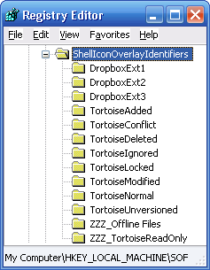
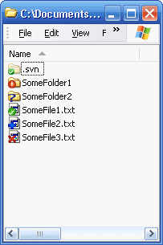
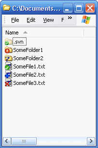

Changing a Websites Site Name in IIS 7
Rather inconveniently there doesn’t seemed to be a way to rename your websites in the IIS Manager UI. Everywhere the “Site Name” appears its greyed out and unchangable; I guess Microsoft have their reasons.
Fortunately you don’t have to delete and recreate your entire site to be able to rename, this task can be performed from the command line using the appcmd.exe utility.
Run the windows command processor but ensure you “Run as Administrator” and use the following commands:
cd C:\Windows\SysWOW6\inetsrv\
appcmd set site ExistingSiteName -name:NewSiteName
Thats it you’re done!
Also after discovering the above I found a requirement to rename a virtual directory (adding a number on the end to remove any possibility of client caching) using the same utility…
appcmd set VDIR "Default Web Site/oldVDirName" -path:/newVDirName
Plus if you had any Applications living under that virtual directory then you’ll need to move them also else they’ll be lost in oblivion….
appcmd set APP "Default Web Site/oldVDirName/MyApplication" -path:/newVDirName/MyApplication
Why I Always Use Curly Braces/Brackets
Developer 1 really, really hates whitespace, it’s the spawn of the devil you know, he codes the following:
if (condition)
doSomething();
mustHappenAfterIfStamement();
Inexperienced (or incompetent) developer 2 comes along to fix a problem or add a feature and fails many times.
if (condition)
// doSomething(); I've temporarily commented out this line for debugging, oops I've now foobar'ed the flow of code execution, worth it for the whitespace saved though <high fives dev 1, he’s the man>
mustHappenAfterIfStamement();
if (condition)
// I've subsequently added this comment, other devs might be confused about whether doSomething() is
// executed or not, but ah well at least dev 1 saved that whitespace, I hate whitespace too, even though I have a 3x 27" monitors
doSomething();
mustHappenAfterIfStamement();
if (condition)
doSomething();
doSomthingMore(); // I’m not very good at tabbing, I'm hoping this will be executed only when condition is true, however it'll also be executed if its false. I hate it when it snows, it’s the white you see
mustHappenAfterIfStamement();
I come along sees dev 1’s code and automatically refactor because I’ve made it my habit to always included curly braces. Quick call the whitespace police… or not, it doesn’t even have to cost you your wonderful whitespace.
if (condition)
{ // OMG white space, my eyes are bleeding, kill me
doSomething();
} // this is insane, help me god, no more of the whiteness
mustHappenAfterIfStamement();
if (condition) { doSomething(); }
mustHappenAfterIfStamement();
if (condition)
{ doSomething(); }
mustHappenAfterIfStamement();
Android: How To Launch an Email Intent Attaching a Resource via a URL
Today at work I had the requirement to invoke an intent that would send a plain text email but with an image attachment sourced from the internet. I struggled to find a complete solution online for these particular requirements and thought I’d share my solution here.
String urlOfImageToDownload = "https://ssl.gstatic.com/s2/oz/images"
+ "/google-logo-plus-0fbe8f0119f4a902429a5991af5db563.png";
String attachmentFileName = "AnImageFromTheWeb.png";
// Start to build up the email intent
Intent i = new Intent(Intent.ACTION_SEND);
i.setType("message/rfc822");
i.putExtra(Intent.EXTRA_EMAIL, new String[] { "abc@mail.com" });
i.putExtra(Intent.EXTRA_SUBJECT, "Check Out This Image");
i.putExtra(Intent.EXTRA_TEXT, "There should be an image attached");
// Do we need to download and attach an icon and is the SD Card available?
if (urlOfImageToDownload != null && Environment.MEDIA_MOUNTED.equals(
Environment.getExternalStorageState())) {
// Download the icon...
URL iconUrl = new URL(urlOfImageToDownload);
HttpURLConnection connection
= (HttpURLConnection) iconUrl.openConnection();
connection.setDoInput(true);
connection.connect();
InputStream input = connection.getInputStream();
Bitmap immutableBpm = BitmapFactory.decodeStream(input);
// Save the downloaded icon to the pictures folder on the SD Card
File directory = Environment.getExternalStoragePublicDirectory(
Environment.DIRECTORY_PICTURES);
directory.mkdirs(); // Make sure the Pictures directory exists.
File destinationFile = new File(directory, attachmentFileName);
FileOutputStream out = new FileOutputStream(destinationFile);
immutableBpm.compress(Bitmap.CompressFormat.PNG, 90, out);
out.flush();
out.close();
Uri mediaStoreImageUri = Uri.fromFile(destinationFile);
// Add the attachment to the intent
i.putExtra(Intent.EXTRA_STREAM, mediaStoreImageUri);
}
// Fire the intent
startActivity(i);
Unboxing of HD Anywhere 4×4 HDMI CAT 5/6 Matrix Switch (aka Grandbeing MX0404-323)
I purchased a HD Anywhere 4×4 HDMI CAT 5/6 Matrix Switch a while and took some photos at the time of the unboxing and I’m finally getting round to sharing! This item is a replacement for the Octava equivalent that I had previously trialled with limited success and have since returned.
The unit was purchased from HD Cable using their ‘AVF10′ discount code which got me 10% off. Upon receiving the unit, I did search of the interwebs and discovered that the unit is in fact just a rebranded Grandbeing MX0404-323. All good.
When I get the chance I’ll follow up with some details of my AV setup and experiences using the matrix…
{kind=link}
{kind=link}
{kind=link}
{kind=link}
{kind=link}
{kind=link}
{kind=link}
{kind=link}
{kind=link}
{kind=link}
{kind=link}
{kind=link}
{kind=link}
{kind=link}
{kind=link}
{kind=link}
{kind=link}
{kind=link}
Experiences with Octava 4×4 HDMI Matrix Switch (HDMX44CAT-UK)
I posted the Unboxing of Octava 4×4 HDMI Matrix Switch (HDMX44CAT-UK) a while back having just taken delivery of the Octava unit.
Anyways, having owned and tried using the box for a over a month I am disappointed to report that I have returned it. The matrix gave me a host of problems, some of which I overcame with some rigorous trial and error techniques, others of which I wasn’t so lucky.
My full experience is documented over at AVForums in my Experiences with Octava 4×4 HDMI CAT6 Matrix Switch (HDMX44CAT-UK) thread. It is a bit of a long read so to summarise the final list of the unresolved issues that I experienced with the Octava matrix are as follows…
- No sound on Sharp TV, regardless of EDID mode (unless I performed a complex cable swap, to force HDMI handshake, with every matrix reboot)
- REVO/XBMC/HTPC would frequently get “lost” (no picture/sound routed to any receiver) by the matrix (when being brought out of standby normally). The only way to fix was to reboot both the REVO and the matrix
- Certain sources (Xbox 360) not automatically detecting sink device as 1080P capable (wasn’t a immediate problem since I can manually force the source to do 1080P but could see issues going forward if I were to add other source devices that don’t have the appropriate settings)
- Intermittent IR issues (I put this down to interference being emitted from my Samsung TV however when trying to debug the issue I found that pulling the IR cable out of one of the extenders would cause all IR to stop working all together from any extender, very strange, there seems to me there’s way to much ‘dependency’ in the matrix)
I am however pleased to report that I have recently taken delivery of a HD Anywhere 4×4 matrix and so far this works almost flawlessly out of the box. I am still testing however and will report more soon.
Holy Smokes, Someone Just Put a Rocket Up My [2.2.2] Nexus One (INIT Android Process Lag/Slow Down Fix)
For many months now I’ve been experiencing varied periods of “lag” or “slow down” on my Nexus One Android phone (running FRG83G 2.2.2) . I’d never been able to attribute this slow down to any particular application even with the help of task managers and task killers and diagnostic tools… until now…
With some help from the “Watchdog” app (which continuously monitors all the process on your phone and notifies you if a given process has exceeded a given CPU threshold) I was finally able to attribute the problems to the “INIT” android system process.
Once I’d identified this process as the problem I did a bit of Googling. First, I found a lot of others complaining about this issue on the Google forums but with no apparent solution. Then fortunately I came across an XDA developers thread that proposed to have the solution!
I am very pleased to confirm that enabling the following option…
Settings > Applications > Development > USB debugging
…has fixed the problem entirely. In fact, it has absolutely made my phone run like its on steroids. I’m staggered and absolutely elated by the difference.
Many thanks to “rixsta” @XDA for the fix.
For those wondering here’s a description of the “init” process…
A key component of the Android bootup sequence is the program ‘init’, which is a specialized program for initializing elements of the Android system. Unlike other Linux systems (embedded or otherwise), Android uses its own initialization program. (Linux desktop systems have historically used some combination of /etc/inittab and sysV init levels – e.g. /etc/rc.d/init.d with symlinks in /etc/rc.d/rc.[2345]). Some embedded Linux systems use simplified forms of these — such as the init program included in busybox, which processes a limited form of /etc/inittab, or a direct invocation of a shell script or small program to do fixed initialization steps.
The init program processes two files, executing the commands it finds in them, called ‘init.rc’ and ‘init.
the ‘init.rc’ file is intended to provide the generic initialization instructions, while the ‘init.
UPDATE: I have since received a system update to gingerbread 2.3.3 GRI40 and this seems to have fixed the issue so the USB Debugging fix is no longer required.
Using MAXDOP with Complex SQL Queries
We came across a problem at work today where the CPU resource of a quad core MS SQL machine was totally consumed by someone issuing a rather complex and time-consuming SQL query (it wasn’t me honest!).
If you’re unable to optimize or avoid running such a complex query then it is recommended you use the MAXDOP (maximum degree’s of parallelism) query hint which enables you to specify the number of CPU’s used by the query.
Here’s an example, using only a single CPU…
SELECT * FROM tblWithLoadsOfData WITH (NOLOCK)
WHERE (someField LIKE '%blah%'
OR someField LIKE '%foo%'
OR someField LIKE '%goober%'
OR someField LIKE '%ollie%'
OR someField LIKE '%cpu%'
OR someField LIKE '%maxdop%')
OPTION (MAXDOP 1)
Unboxing of Octava 4×4 HDMI Matrix Switch (HDMX44CAT-UK)
Took delivery of my Octava 4×4 HDMI CAT6 Matrix Switch today so I thought I’d draft a quick post to show some pictures of the unboxing. I’ll follow up later with some details of my AV setup and experiences using the matrix…
{kind=link}
{kind=link}
{kind=link}
{kind=link}
{kind=link}
{kind=link}
{kind=link}
{kind=link}
{kind=link}
{kind=link}
{kind=link}
{kind=link}
{kind=link}
{kind=link}
{kind=link}
Dropbox and Tortoise SVN (Subversion) Icon Overlays in Harmony
If you’ve been using both Dropbox & Tortoise SVN simultaneously on Windows then you may have come across some irritating issues with the icon overlays used by both programs in Windows explorer.
Fix Missing Icon Overlays
Some users may be experiencing issues with their overlay icons simply not appearing at all. This is probably due to the lame Windows restriction which only allows a maximum of 15 icon overlays to be used.
- Run “regedit” and locate:
"HKEY_LOCAL_MACHINE\SOFTWARE\Microsoft\Windows\CurrentVersion\ Explorer\ShellIconOverlayIdentifiers\"
At this level you will see a number of registry folders each representing a particular icon overlay. This list doesn’t show the 4 icon overlays used by the Windows system and so actually only 11 of the folders shown will actually be used, the others are just abandoned by Windows, nice one Bill!
Luckily for us the way Windows decides which 11 to use is by simply taking the first 11 in alphabetical order. Luckily again Windows doesn’t care what the folders are named in the registry and in this way we can rename the folders to ensure that the 11 icons we want to work are the first 11 alphabetically.
Ultimately however this means you’ve got to decide which icons to bin. Personally I’ve chosen “Offline Files” (some icon used by Windows sync which I’ve never seen), and “TortoiseReadOnly”. You may however have to ditch more depending on what programs you’ve got installed and so the decision is up to you, sorry peeps you’re on your own here.
NOTE: At this point I must stress its always advisable to backup before editing the registry.
- Rename the folders so there in the order you want (mine looked like below):
 - Restart the “explorer.exe” process by killing in it task manager and then restarting (using File – “New task” – explorer)
And bingo, any icons you were previously missing should have re-appeared.
Getting Tortoise SVN Icons to Take Priority Over Dropbox Icons
The most annoying gripe for me was that when I had a SVN project checked out to my Dropbox folder I had no idea what files when modified, added, removed etc because all Windows Explorer would ever display was the Dropbox icon overlays instead of the Tortoise SVN ones.
Using the same technique as described above you can rename the icon overlay registry folders so that the Tortoise SVN icons appear before the Dropbox icons and thus they take priority.
I renamed mine (as below left), restarted the “explorer.exe” process and now the Tortoise SVN icons take precedence (see below right):
 

Optionally: Disable the Dropbox “Green Tick” Overlay
Whilst searching the Dropbox forums I saw alot of users moaning that they wanted to remove the default “green tick” icon overlay used by Dropbox altogether. This can be achieved as follows:
- Within the “DropboxExt1″ registry folder (or whatever you named it earlier)
- Right click the “(Default)” value and select “Modify”
- Prefix the existing value with any text so that Windows can’t find it, e.g.
"MANUALLY_EDITED_{FB314EDA-A251-47B7-93E1-CDD82E34AF8B}" - Restart the “explorer.exe” process.
Voila, any Dropbox files/folders that aren’t sync’ing or error’ed will display their regular icon.
How To Add In-App Toggle Apps to Your Notification Bar
I have a lot of Android phone users who cannot use my “In-App” Android applications because either their phone doesn’t have the necessary hard keys available or because their phone manufacturer has retardedly hard coded their hard keys, not mentioning any names… Motorolla!!!
I have come up with a solution to this issue, which is to add the application as a shortcut in your notification bar. With the help of another couple of well respected applications this is possible as below. (This at present isn’t something you can do with the “In-App” applications alone I’m afraid although I plan to add it in future releases).
- Install “Bar Tender Lite” (available free from the Android Market, author “PinkVenture”)
- Install “Any Cut” (available free from the Android Market, author “Jeff Hamilton”)
- Open “Bar Tender Lite” from your application tray
- Press the “+ Item” button
- Select “Any Cut”
- Select “Make your own”
- In the “Action” text field type exactly (ensure you get the case correct):
android.intent.action.VOICE_COMMAND - Do NOT type anything for “Data” or “Type”, leave them blank
- Press “OK”
- Enter a name of your choice for the shortcut, I suggest “Toggle Wifi” or “Toggle Bluetooth”
- Press “OK”
- Back in “Bar Tender Lite” application, press “Save” and exit the application
Now you’re done. You should be able to drag down your notification bar from any context and you should always have a In-App shortcut available. Note, once you’ve set-up the shortcut you can actually uninstall “Any Cut” if you want to save some space.
The original point of the “In-App” apps was to be able to enable/disable in a single press however I feel a swipe followed by a press isn’t a bad compromise, heh?
I would welcome any feedback on whether this has assisted people (or not)!
Troubleshooting:
- If you receieve an “Application is not installed on your phone” Message
Make sure you typed the “Action” exactly as above, the case has to be exactly the same, it can’t have spaces, the first character should NOT be a capital.
- If you encounter other errors with “Any Cut”
Instead of Installing “Any Cut”, try installing “Manual Intent Shortcuts”, at step 5) select “Manual Intent Shortcuts”, type “Toggle Wifi” for the “Shortcut Name” and “android.intent.action.VOICE_COMMAND” for the “Action”, press OK.